BabyCare · Kiểm tra UI 11/09/2026
Ảnh bản build trên iPhone 17 Simulator, iOS 26.5. Dữ liệu kiểm thử. Mỗi màn dùng ảnh mới nhất của các lần kiểm thử.
A – Hồ sơ đầu tiên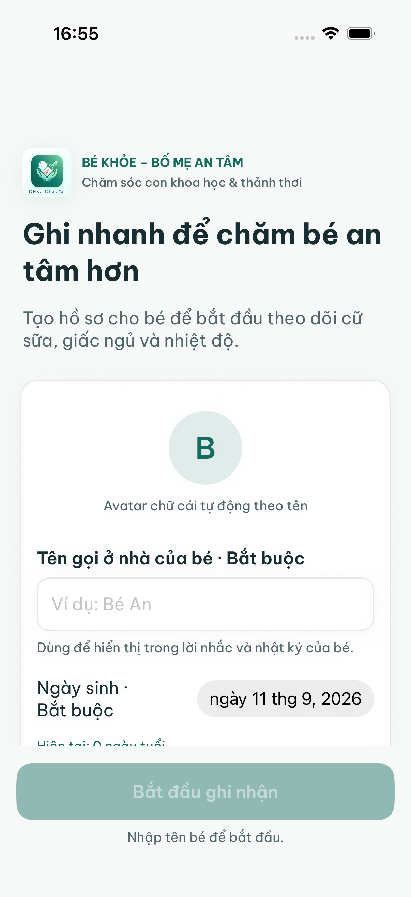
D – Dữ liệu còn sau khi tắt và mở lại app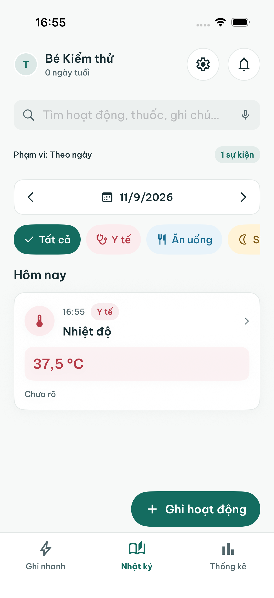
D – Nhiệt độ đã lưu trong nhật ký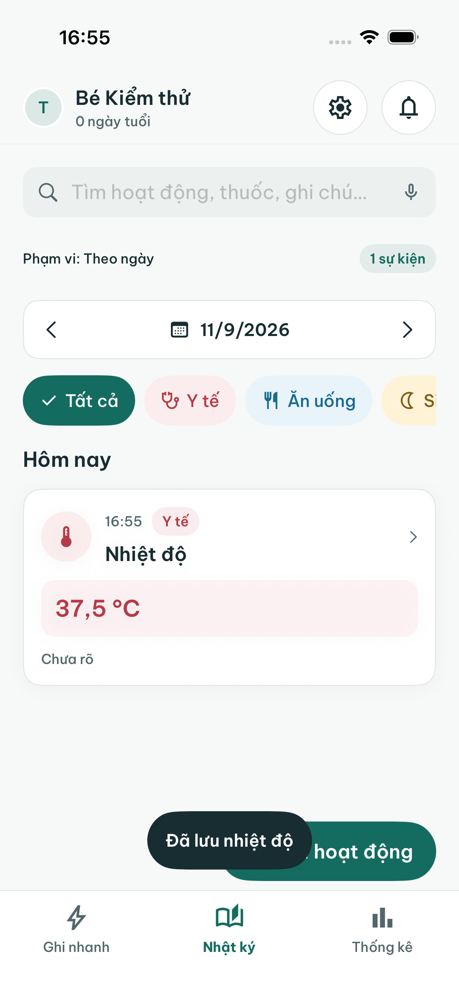
Stitch — Chi tiết hoạt động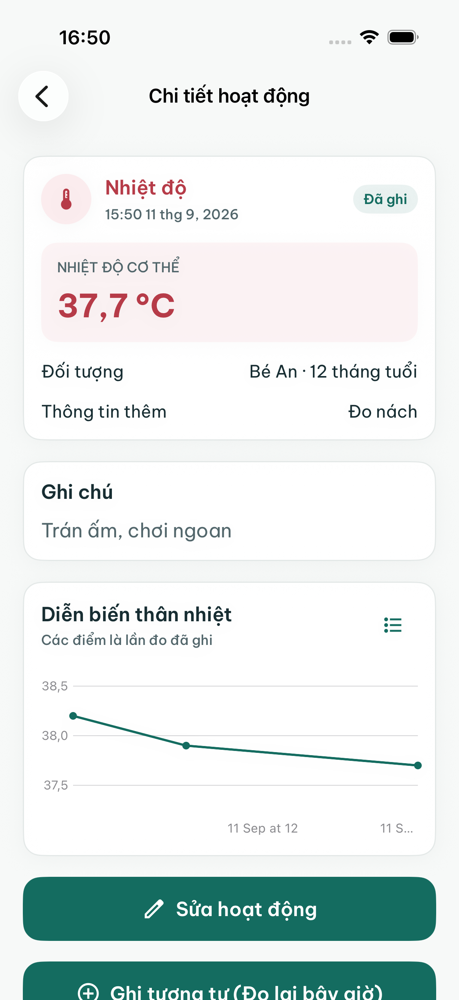
Stitch — Chia sẻ báo cáo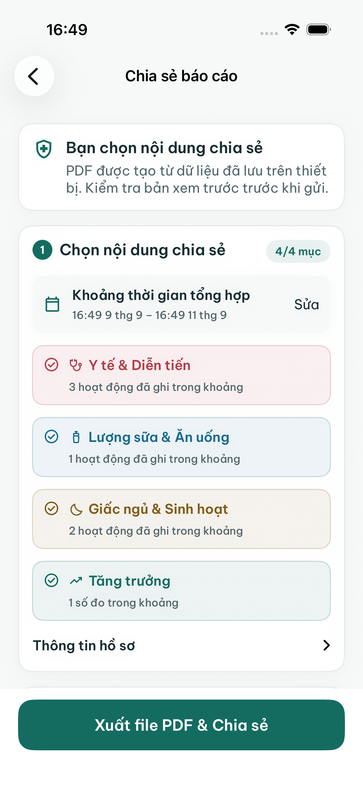
Stitch — Chọn Sinh hoạt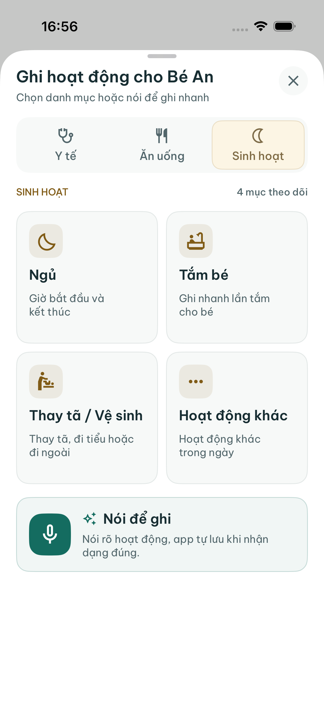
Stitch — Chọn Y tế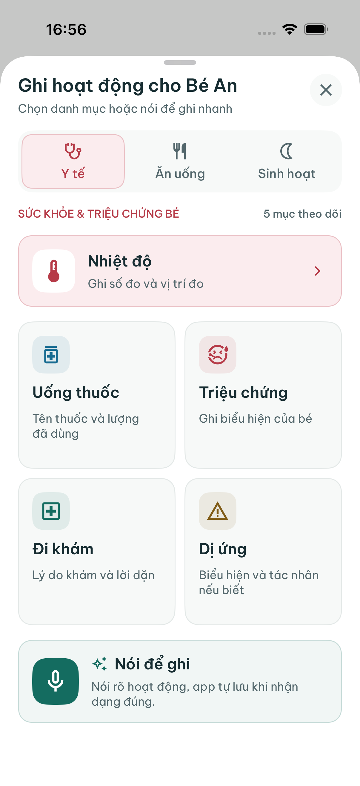
Stitch — Chọn hoạt độngStitch — Chọn ngày giờ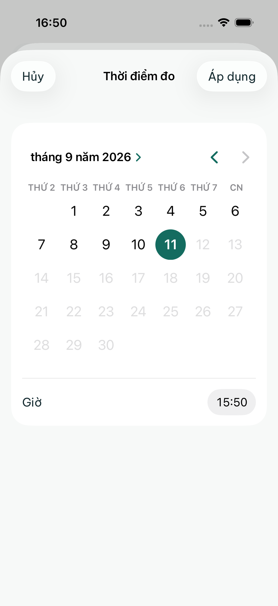
Stitch — Chọn Ăn uống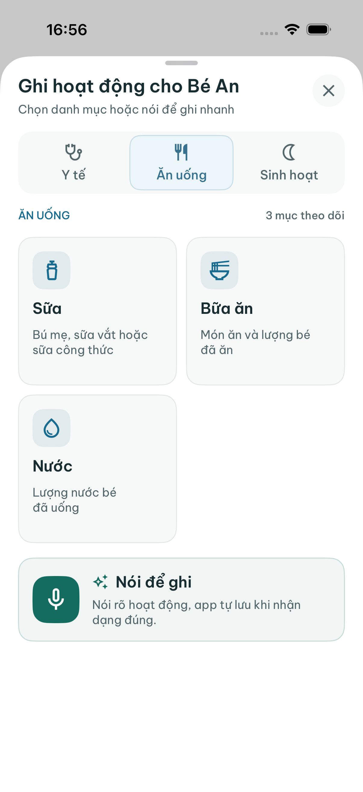
Stitch — Cài đặt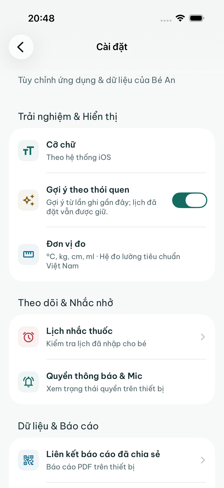
Stitch — Form nhiệt độ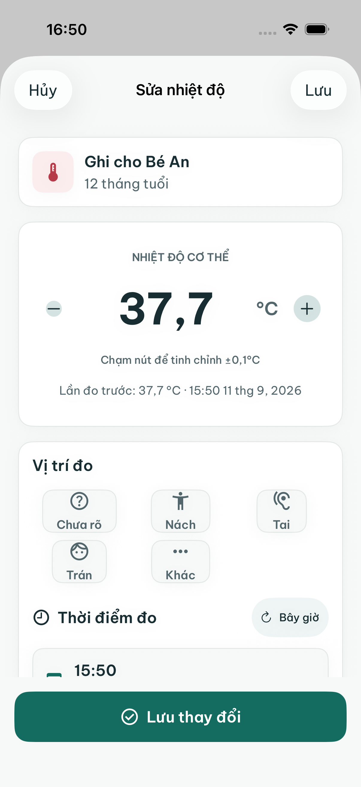
Stitch — Ghi nhanh danh mục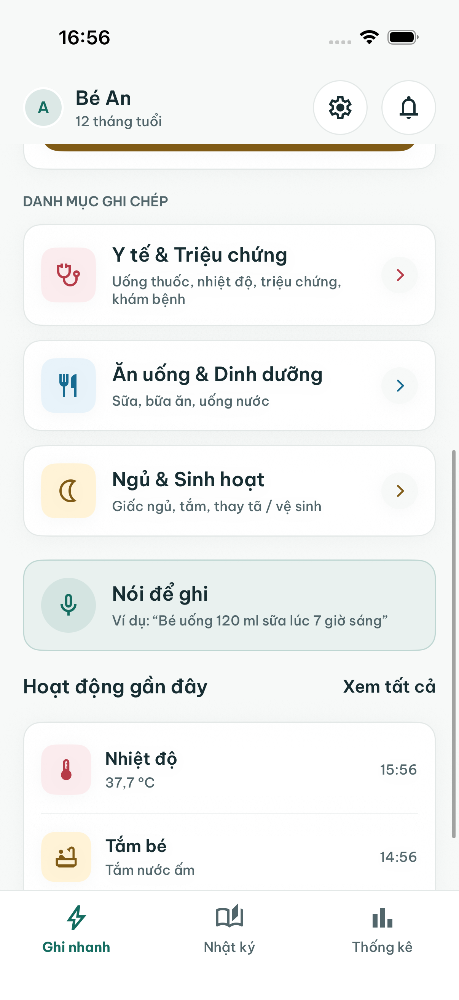
Stitch — Ghi nhanh đầu màn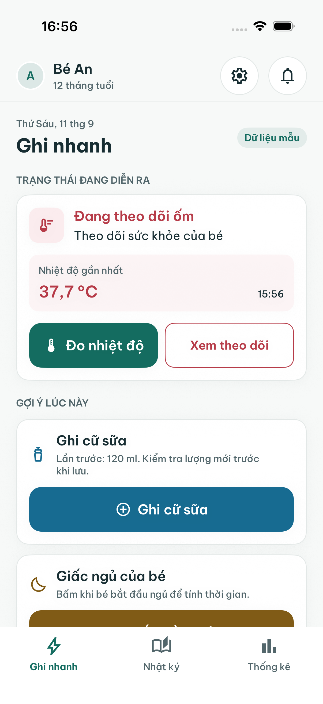
Stitch — Giọng nói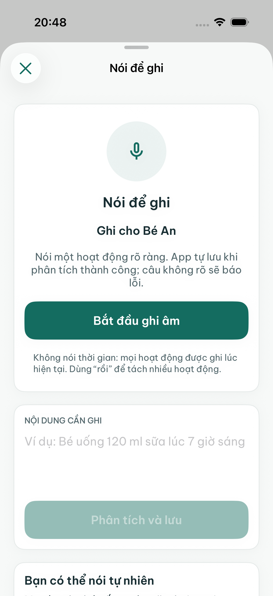
Stitch — Hồ sơ bé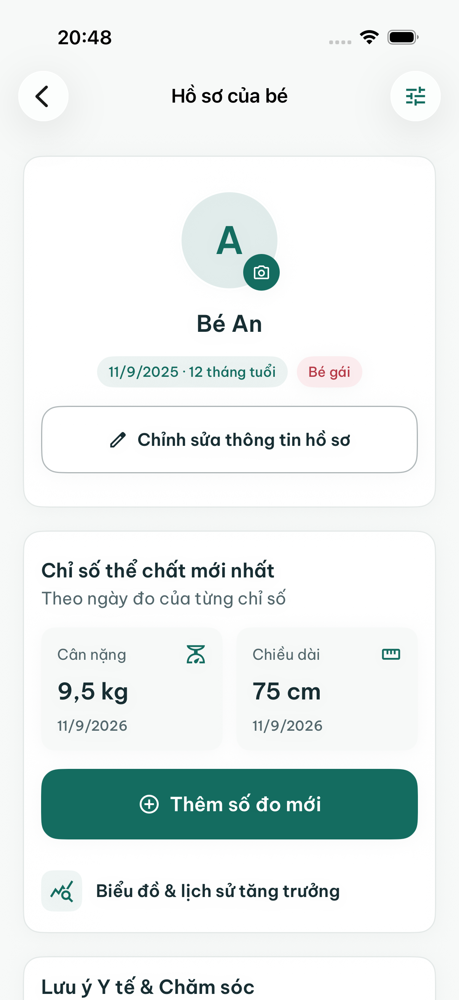
Stitch — Nhập số đo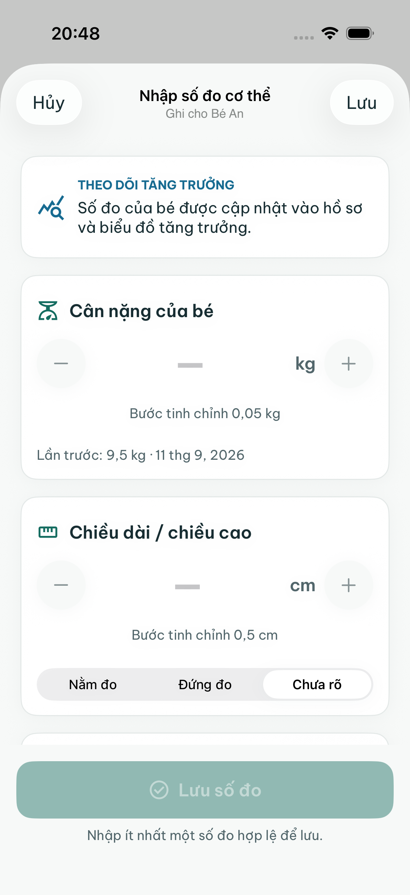
Stitch — Nhật ký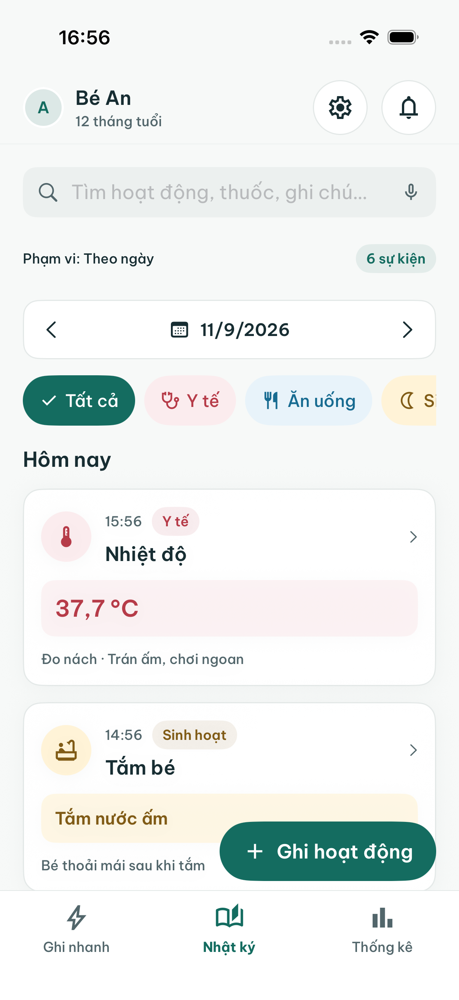
Stitch — Theo dõi ốm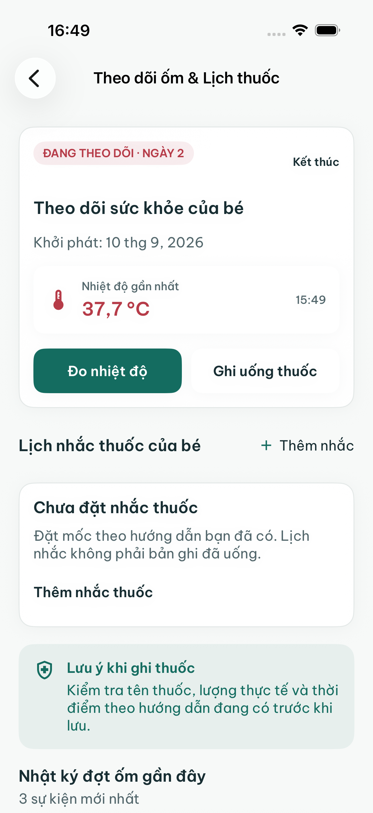
Stitch — Thống kê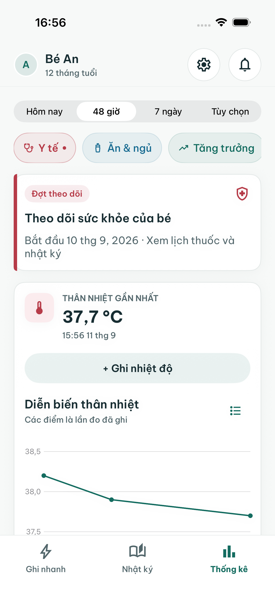
Stitch — Xem trước báo cáo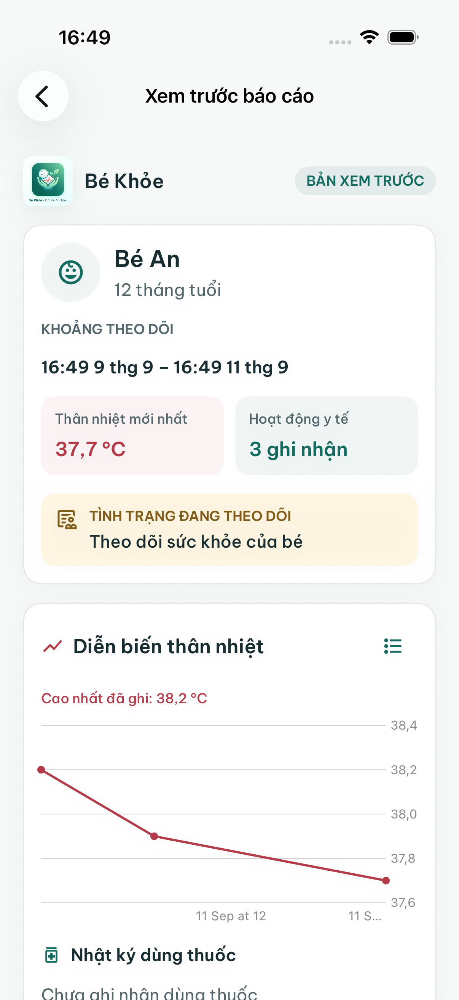
Stitch — Đăng ký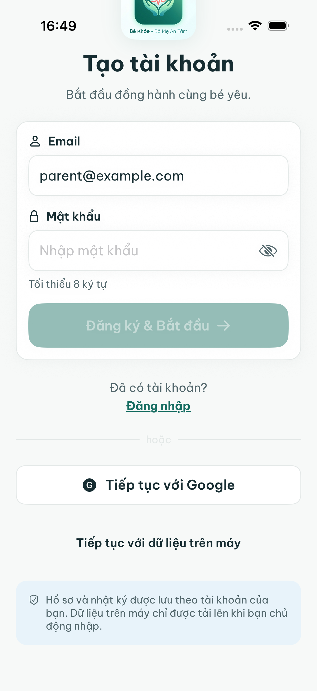
Stitch — Đăng nhập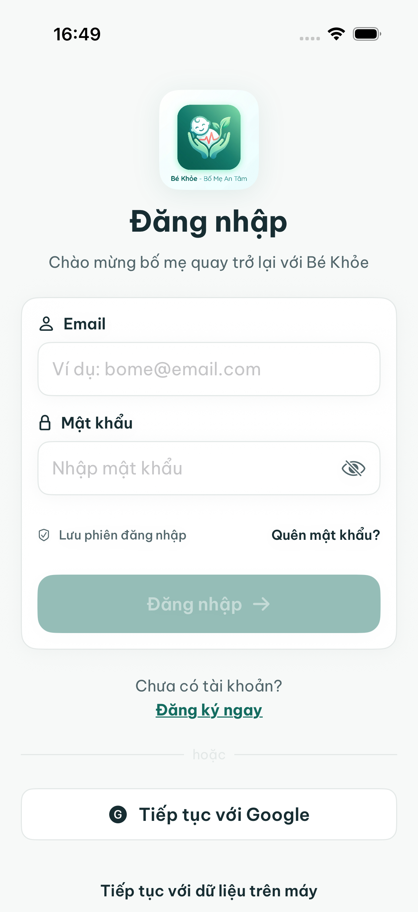